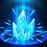

SKILL 01
Icy Vengeance
Krista launches five ice crystals one after another, dealing area Magic Damage while slowing enemies hit. The skill scales with Magic Attack and can deal significant damage, especially when her Weapon Artifact provides additional Magic Attack to the team.